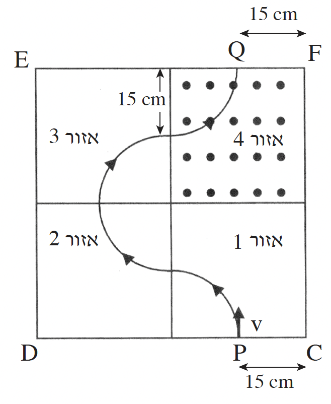

ריבוע \(CDEF\) מחולק לארבעה אזורים \(1-4\) (ראו תרשים). כל אחד מארבעת האזורים הוא ריבוע שממדיו \(30 cm \times 30 cm\). בכל אזור שורר שדה מגנטי אחיד שגודלו \(B = 1 T\), וכיוונו ניצב לריבוע \(CDEF\). באזור \(4\) השדה "יוצא מהדף".
חלקיק א טעון חודר לתחום הריבוע \(CDEF\) בנקודה \(P\) (ראו תרשים), שמרחקה מהנקודה \(C\)
הוא \(15 cm\), במהירות שכיוונה ניצב לקו \(CD\) ולכיוון השדה המגנטי, וגודלה \(v = 3.6 \cdot 10^6 m/s\). מסת החלקיק \(6.67 \cdot 10^{-27} kg\) (ראו תרשים).

א.האם המטען החשמלי של חלקיק א הוא חיובי או שלילי? נמקו. (5 נקודות)
ב.מה הם כיווני השדות המגנטיים באזורים \(1, 2, 3\)? (כתבו \(X\) אם כיוון השדה "לתוך הדף",
וכתבו \(\bullet\) אם כיוון השדה "יוצא מהדף"). נמקו. (5 נקודות)
ג.חשבו את המטען של חלקיק א. (5 נקודות)
ד.האם לאורך מסלול התנועה של חלקיק א מנקודה \(P\) לנקודה \(Q\) וקטור המהירות של החלקיק משתנה:
(1) בכיוונו? נמקו. (4 נקודות)
(2) בגודלו? נמקו. (4 נקודות)
ה.חשבו את משך הזמן שבו חלקיק א נע מנקודה \(P\) לנקודה \(Q\). (5 נקודות)
ו.בנקודה \(Q\) (ראו תרשים) משגרים לתוך אזור \(4\) בזה אחר זה שני חלקיקים, ב ו- ג, באותו גודל מהירות (\(v = 3.6 \cdot 10^6 m/s\)), במאונך ל- \(EF\) ולשדה המגנטי שבאזור \(4\). לשני
החלקיקים ב ו-ג מסות זהות למסה של חלקיק א. לחלקיק ב יש מטען זהה למטען של חלקיק א, ולחלקיק ג יש מטען מנוגד למטען של חלקיק א.
איזה משני החלקיקים — ב או ג — ינוע לאורך מסלול התנועה של חלקיק א? נמקו.
(הניחו כי אין אינטראקציה בין החלקיקים במהלך תנועתם בשדות המגנטיים.) (5.33 נקודות)